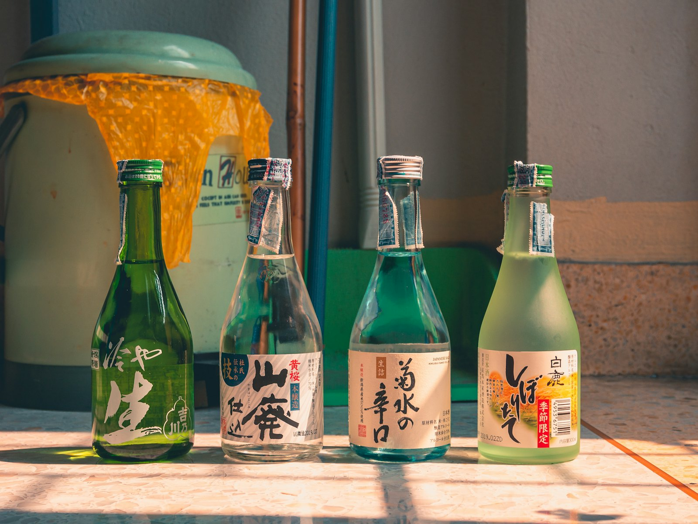

豊洲駅すぐ、
座って飲める角打ち。Right by Toyosu Station —
a sit-down sake stand.
日本酒が看板の、こぢんまりとした角打ち酒場。仕事帰りに、一杯だけでも気軽にどうぞ。A small kakuuchi bar where sake is the star. Drop in after work, even for just one glass.

※写真はイメージです（公開時はお店の写真に差し替えます）Sample photo — to be replaced with the shop’s own.
KAKUUCHI
酒屋で、ちょっと一杯。A glass at the sake shop.
「角打ち」は、酒屋の一角でお酒を楽しむ昔ながらの飲み方。せ・ぼんは、立たずに座って飲める角打ちです。Kakuuchi is the old custom of drinking in a corner of a liquor shop. At Cest Bon, you get to sit down while you do it.
一
日本酒が看板Sake first
日本酒を中心に、その日のお酒をどうぞ。Sake takes center stage — ask what's open today.
二
座って飲めるTake a seat
約15人ほどのこぢんまりした店内。A cozy room for around fifteen.
三
平日の夜だけWeeknights only
月〜金 17:00〜23:00。土日祝はお休み。Mon–Fri 17:00–23:00. Closed weekends and holidays.
RESERVE
ご予約は、
メールでも。Book by email.
営業日（平日）を選ぶと、予約メールの文面ができあがります。Pick a weeknight and we'll write the booking email.
ご予約メモBooking note
メールで送るSend by email ※ お店からの返信をもってご予約確定となります。Your booking is confirmed once the bar replies.ACCESS
お店への行き方Find us
- 住所Address
- 〒135-0061 東京都江東区豊洲4-1-2 TOSKビル103TOSK Bldg. 103, 4-1-2 Toyosu, Koto-ku, Tokyo 135-0061
- 最寄駅Station
- 豊洲駅 4番・5番出口すぐRight by Toyosu Sta. exits 4 & 5
- 営業時間Hours
- 月〜金 17:00〜23:00（L.O. 22:30）Mon–Fri 17:00–23:00 (L.O. 22:30)
- 定休日Closed
- 土・日・祝日Sat, Sun & holidays
- TEL
- 03-3531-0740
- cestbon.toyosu@gmail.com
- @cestbon_toyosu